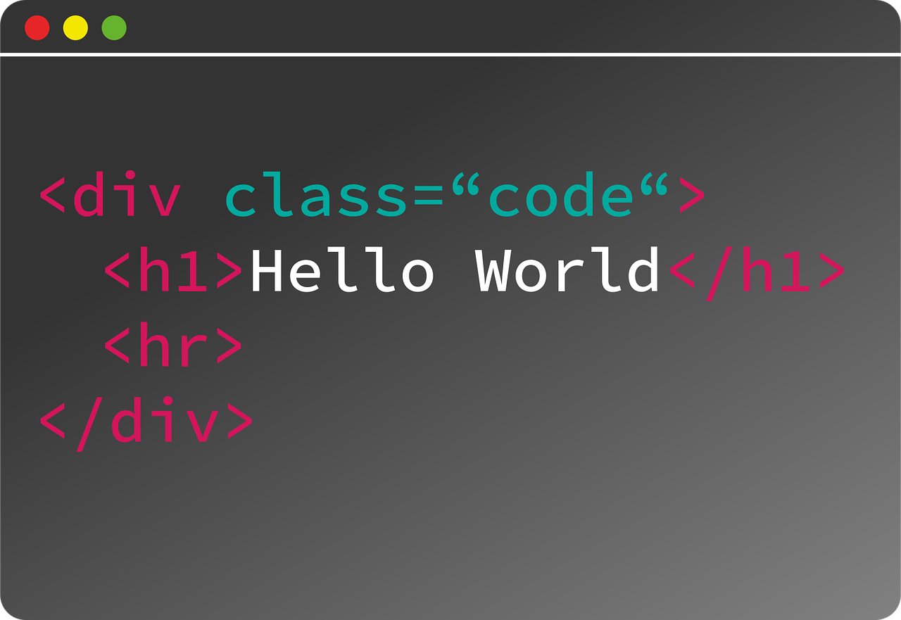

هنا كانت الأيام الجميله والاكثر من رائع والتي لايمكن وصفها بكلمات حتى بكلمات أكثر تعبيرا وتأثيرآ فتبقى الذكريات ذكريات دوما في القلوب مخفيه...ومن رحلتنا الى
الوقع في مديرية جحاف...فهي الاماكن الأكثر شوقا لها ولا يوجد صور حاليا لها

نسعى إلى تحقيق تأثير إيجابي في مجتمعنا وتطوير مهارتنا للوصول الى مستويات متقدمة في مجال البرمجة وتصميم المواقع والشبكات
نبذة إبداعية
الإبداع ليس مجرد مهارة بل أسلوب أتبناه في كل ما أقوم به و أؤمن بأن التفكير خارج الصندوق هو مفتاح التميز وأن الأفكار المبتكرة هي التي تصنع الفرق.ونسعى دائما لأكتشاف زوايا جديدة لكل فكرة وأحب التحديات التي تتطلب حلولا غير تقليدية
وأجد متعتي في تحويل الأفكار المجردة إلى واقع ملموس سواء كان ذالك من خلال الكتابة او التصميم أو الفن أو حتى في أسلوب التفكير اليومي لأ اؤمن بالحدود عندما يتعلق الأمر بالأبداع ...فكل تجربه جديدة تضيف لي منظورا مختلفا وتوسع أفاقي
الألهام بالنسبة لي يمكن أن ياتي من اي شئ من كتاب من محادثة عابرة أوحتى من لحضة تأمل صامتة .....نسعئ لأن نكون لنا بصمةخاصة تعكس رؤيتي الفريدة وأعمل دائما على تطوير نفسي وتجربة طرق جديدة للتعبير عن أفكارنا
الأبداع هو رحلتي وليس مجرد وجهة أصل إليها
رجوع إلى الصفحة الرئيسية